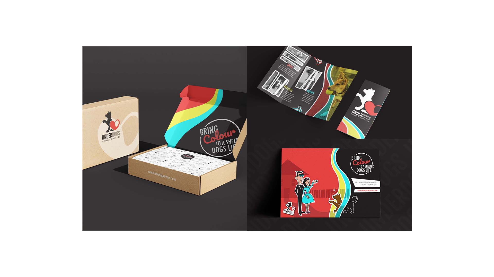

Zac Holley
- Bachelor of Design
- Major in Communication Design
- Minor in Media Design
biography
Hello! I am Zac Holley, and I will graduate with a Bachelor of Design majoring in Communication Design and minoring in Media Design at the end of this year. I have always had a passion for design and art and am happy to have been able to explore that at The University of Waikato.
I was always interested in art and other creative outlets growing up, but it wasn’t until I came to Waikato that I understood it could be a potential career path for me. Through studying, I’ve been able to figure out who I am as a designer and what design looks like for me. I’ve been able to find my own style when it comes to design, realising I enjoy and excel in poster design and branding. Studying design at Waikato has allowed me to turn an interest into a skill and I am excited to see where that leads to from here.
project description
Just in Auckland animal shelters alone, almost eight dogs a day are being euthanised due to a lack of
space and dogs being deemed “unadoptable.” This project is based around a service that allows people to
sponsor dogs that are in these shelters until they find a new home. These sponsors would help to fund
shelters so that they can provide the proper care, have the facilities to hold more dogs, and
rehabilitate those who are currently “unadoptable.”
As part of this service, sponsors will get to choose a shelter dog to watch over. A sponsor for one of
these dogs gets a welcome package with photos of the dog and information about them, an Underdogs
t-shirt, and an assortment of stickers, all in a box that doubles as a package to send back to the dog
they are sponsoring. Sponsors can fill the box with toys and treats for their sponsored dog and the
other dogs at the shelter. Each sponsor is also updated with their dog's progress at the shelter and
when they get adopted, to make the journey feel special between them and their sponsored dog. The aim of
the service is to reduce the number of dogs that are being put down in these shelters and give them a
better chance of finding a home and a family.
Underdogs

For more information contact us
Email: degreeshow@waikato.ac.nz
Faculty phone: 0800 924 528
Faculty information: cs.waikato.ac.nz